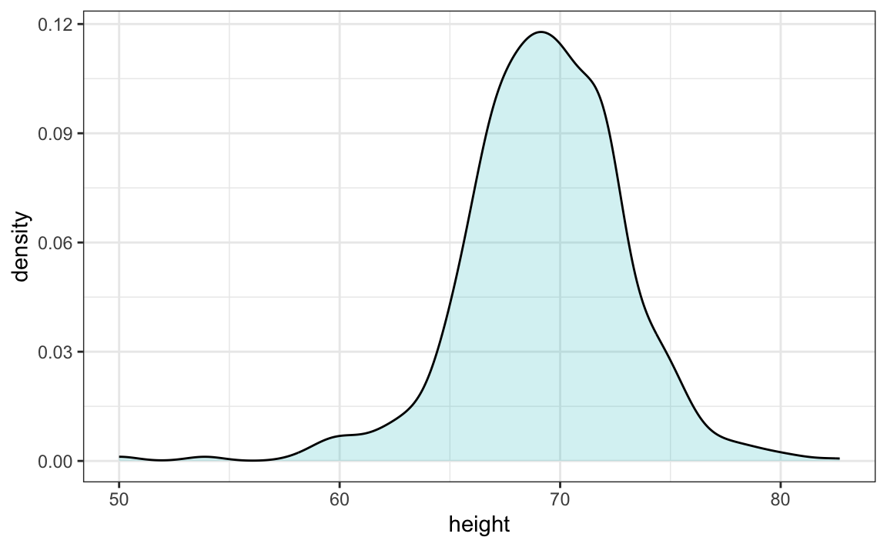
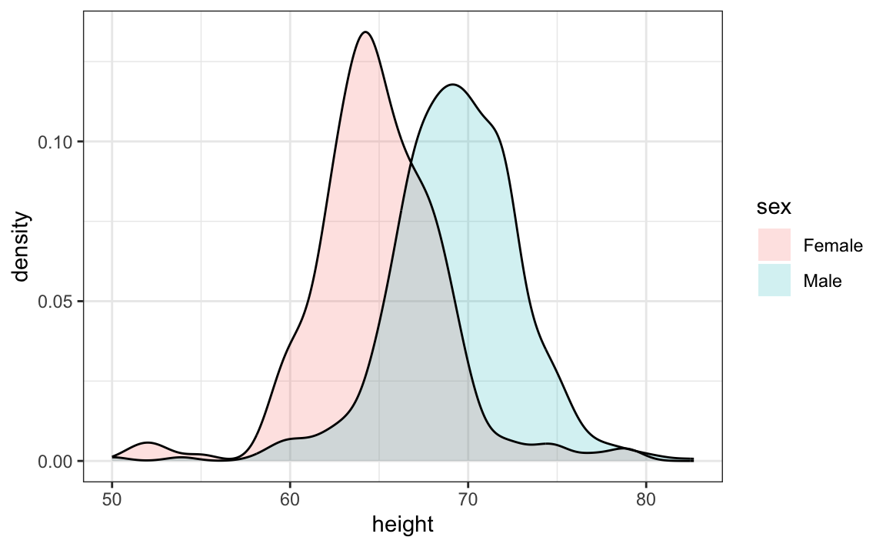
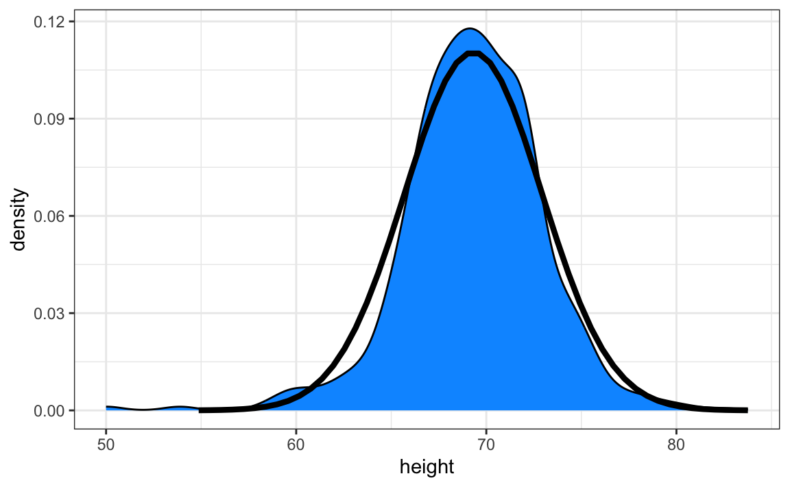
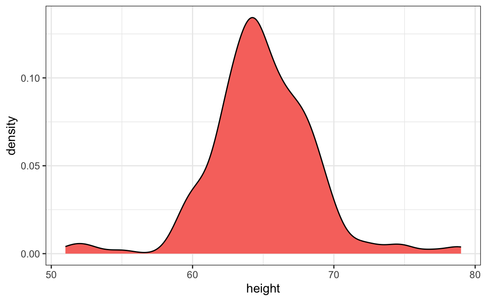

7 Visualizing data distributions
Summarizing complex datasets is crucial in data analysis, allowing us to share insights drawn from the data more effectively. One common method is to use the average value to summarize a list of numbers. For instance, a high school’s quality might be represented by the average score in a standardized test. Sometimes, an additional value, the standard deviation, is added. So, a report might say the scores were 680 \(\pm\) 50, boiling down a full set of scores to just two numbers. But is this enough? Are we overlooking crucial information by relying solely on these summaries instead of the complete data?
Our first data visualization building block is learning to summarize lists of numbers or categories. More often than not, the best way to share or explore these summaries is through data visualization. The most basic statistical summary of a list of objects or numbers is its distribution. Once a data has been summarized as a distribution, there are several data visualization techniques to effectively relay this information. For this reason, it is important to have a deep understand of the concept of a distribution.
In this chapter, we discuss properties of a variety of distributions and how to visualize distributions using a motivating example of student heights.
7.1 Variable types
The two main variables types are categorical and numeric. Each can be divided into two other groups: categorical can be ordinal or not, whereas numerical variables can be discrete or continuous. When each entry in a dataset comes from one of a small number of groups, we refer to the data as categorical data. Two simple examples are sex (male or female) and US regions (Northeast, South, North Central, West). Some categorical data can be ordered even if they are not numbers per se, such as spiciness (mild, medium, hot). In statistics, ordered categorical data are referred to as ordinal data. Examples of numerical data are population sizes, murder rates, and heights. We can further divide numerical data into continuous and discrete. Continuous variables are those that can take any value, such as heights, if measured with enough precision. For example, a pair of twins may be 68.12 and 68.11 inches, respectively. Counts, such as population sizes, are discrete because they have to be round numbers.
Keep in mind that discrete numeric data can be considered ordinal. Although this is technically true, we usually reserve the term ordinal data for variables belonging to a small number of different groups, with each group having many members. In contrast, when we have many groups with few cases in each group, we typically refer to them as discrete numerical variables. So, for example, the number of packs of cigarettes a person smokes a day, rounded to the closest pack, would be considered ordinal, while the actual number of cigarettes would be considered a numerical variable. But, indeed, there are examples that can be considered both numerical and ordinal when it comes to visualizing data.
Here we focus on numeric variables because visualizing this data type is substantially more complex. However, we start by describing data visualization and summarization approaches for categorical data.
7.2 Case study: describing student heights
We introduce a new motivating problem. It is an artificial one, but it will help us illustrate the concepts needed to understand distributions.
Pretend that we have to describe the heights of our classmates to ET, an extraterrestrial that has never seen humans. As a first step, we need to collect data. To do this, we ask students to report their heights in inches. We ask them to provide sex information because we know there are two different height distributions by sex. We collect the data and save it in the heights data frame:
One way to convey the heights to ET is to simply send him this list of 1,050 heights. But there are much more effective ways to convey this information, and understanding the concept of a distribution will be key. To simplify the explanation, we first focus on male heights. We examine the female height data in Section 7.6.
7.3 Distributions
The most basic statistical summary of a list of objects or numbers is its distribution. The simplest way to think of a distribution is as a compact description of a list with many entries. This concept should not be new for readers of this book. For example, with categorical data, the distribution simply describes the proportion of each unique category. The sex represented in the heights dataset is:
#>
#> Female Male
#> 0.227 0.773This two-category frequency table is the simplest form of a distribution. We don’t really need to visualize it since one number describes everything we need to know: 23% are females and the rest are males. When there are more categories, then a simple barplot describes the distribution. Here is an example with US state regions:

This particular plot simply shows us four numbers, one for each category. We usually use barplots to display a few numbers. Although this particular plot does not provide much more insight than a frequency table itself, it is a first example of how we convert a vector into a plot that succinctly summarizes all the information in the vector. When the data is numerical, the task of displaying distributions is more challenging.
7.3.1 Histograms
Numerical data that are not categorical also have distributions. However, in general, when data is not categorical, reporting the frequency of each entry, as we did for categorical data, is not an effective summary since most entries are unique. For example, in our case study, while several students reported a height of 68 inches, only one student reported a height of 68.503937007874 inches and only one student reported a height 68.8976377952756 inches. We assume that they converted from 174 and 175 centimeters, respectively.
Statistics textbooks teach us that a more useful way to define a distribution for numeric data is to define a function that reports the proportion of the data below \(a\) for all possible values of \(a\). This function is called the empirical cumulative distribution function (eCDF), it can be plotted, and it provides a full description of the distribution of our data. Here is the eCDF for male student heights:

However, summarizing data by plotting the eCDF is actually not very popular in practice. The main reason is that it does not easily convey characteristics of interest such as: at what value is the distribution centered? Is the distribution symmetric? What ranges contain 95% of the values?
Histograms are much preferred because they greatly facilitate answering such questions. Histograms sacrifice just a bit of information to produce plots that are much easier to interpret. The simplest way to make a histogram is to divide the span of our data into non-overlapping bins of the same size. Then, for each bin, we count the number of values that fall in that interval. The histogram plots these counts as bars with the base of the bar defined by the intervals. Here is the histogram for the height data splitting the range of values into one inch intervals: \((49.5, 50.5]\), \((50.5, 51.5]\), \((51.5,52.5]\), \((52.5,53.5]\), \(...\), \((82.5,83.5]\).

As you can see in the figure above, a histogram is similar to a barplot, but it differs in that the x-axis is numerical, not categorical.
If we send this plot to ET, he will immediately learn some important properties about our data. First, the range of the data is from 50 to 84 with the majority (more than 95%) between 63 and 75 inches. Second, the heights are close to symmetric around 69 inches. Also, by adding up counts, ET could obtain a very good approximation of the proportion of the data in any interval. Therefore, the histogram above is not only easy to interpret, but also provides almost all the information contained in the raw list of 812 male heights with about 30 bins.
What information do we lose? Note that all values in each interval are treated the same when computing bin heights. So, for example, the histogram does not distinguish between 64, 64.1, and 64.2 inches. Given that these differences are almost unnoticeable to the eye, the practical implications are negligible and we were able to summarize the data to just 23 numbers.
We discuss how to code histograms in Section 8.14.
7.3.2 Smoothed density
Smooth density plots relay the same information as a histogram but are aesthetically more appealing. Here is what a smooth density plot looks like for our male heights data:

In this plot, we no longer have sharp edges at the interval boundaries and many of the local peaks have been removed. Also, the scale of the y-axis changed from counts to density. To fully understand smooth densities, we have to understand estimates, a topic covered in statistics our advanced data science textbooks. Here we simply describe them as making the histograms prettier by drawing a curve that goes through the top of the histogram bars and then removing the bars. The values shown y-axis are chosen so that the area under the curve adds up to 1. This implies that for any interval, the area under the curve for that interval gives us an approximation of how what proportion of the data is in the interval.
An advantage of smooth densities over histograms for visualization purposes is that densities make it easier to compare two distributions. This is in large part because the jagged edges of the histogram add clutter. Here is an example comparing male and female heights:

With the right argument, ggplot automatically shades the intersecting region with a different color. We will show examples of ggplot2 code for densities in Chapter 10) as well as Section 8.14.
7.3.3 The normal distribution
Histograms and density plots provide excellent summaries of a distribution. But can we summarize even further? We often see the average and standard deviation used as summary statistics: a two-number summary! To understand what these summaries are and why they are so widely used, we need to understand the normal distribution.
The normal distribution, also known as the bell curve and as the Gaussian distribution. Here is what the normal distribution looks like:

The normal distribution is one of the most famous mathematical concepts in history. A reason for this is that the distribution of many datasets can be approximated with normal distributions. These include gambling winnings, heights, weights, blood pressure, standardized test scores, and experimental measurement errors. Statistical textbooks offer explanations for why this is the case. But how can the same distribution approximate datasets with completely different ranges for values, for example heights and weights? A second important characteristic of the normal distribution is that it can be adapted to different datasets by just adjusting two numbers, referred to as the average or mean and the standard deviation (SD). The normal distribution is symmetric, centered at what we refer to as the average, and most values (about 95%) are within 2 SDs from the average. The plot above shows a normal distribution with average 0 and SD 1, often referred to as a standard normal. Note that the fact that only two numbers are needed to adapt the normal distribution to a dataset implies that if our data distribution is approximated by a normal distribution, all the information needed to describe the distribution can be encoded by just two numbers. We now define these values for an arbitrary list of numbers.
Once we are convinced that our data, say it is stored in the vector x, has a distribution that is approximately normal, we can find the specific one that matches our data by matching the average and SD of the data to the average and SD of the normal distribution, respectively. For a list of numbers contained in a vector x:
index <- heights$sex == "Male"
x <- heights$height[index]the average is defined as
and the SD is defined as
which can be interpreted as the average distance between values and their average.
The pre-built functions mean and sd (note that, for reasons explained in statistics textbooks,sd divides by length(x)-1 rather than length(x)) can be used here:
Here is a plot of our student height smooth density in blue and the normal distribution with mean = 69.3 and SD = 3.6 plotted as a black line:

7.4 Boxplots
To understand boxplots we need to define some terms that are commonly used in exploratory data analysis.
The percentiles are the values for which \(p = 0.01, 0.02, ..., 0.99\) of the data are less then or equal to that value, respectively. We call, for example, the case of \(p=0.10\) the 10th percentile, which gives us a number for which 10% of the data is below. The most famous percentile is the 50th, also known as the median. Another special case that receives a name are the quartiles, which are obtained when setting \(p=0.25,0.50\), and \(0.75\), which are used by the boxplot.
To motivate boxplots we will go back to the US murder data. Suppose we want to summarize the murder rate distribution. Using the data visualization technique we have learned, we can quickly see that the normal approximation does not apply here:

In this case, the histogram above or a smooth density plot would serve as a relatively succinct summary.
Now suppose those used to receiving just two numbers as summaries ask us for a more compact numerical summary.
The boxplot provides a five-number summary composed of the range (the minimum and maximum) along with the quartiles (the 25th, 50th, and 75th percentiles). The R implementation of boxplots ignore outliers when computing the range and instead plot these as independent points. The help file provides a specific definition of outliers. The boxplot shows these numbers as a “box” with “whiskers”

with the box defined by the 25% and 75% percentile and the whiskers showing the range. The distance between the 25% and 75% percentile is called the interquartile range. The two points are outliers according to the R implementation. The median is shown with a horizontal line.
From just this simple plot, we know that the median is about 2.5, that the distribution is not symmetric, and that the range is 0 to 5 for the great majority of states with two exceptions.
We discuss how to make boxplots in Section 8.14.
7.5 Stratification
In data analysis we often divide observations into groups based on the values of one or more variables associated with those observations. For example in the next section we divide the height values into groups based on a sex variable: females and males. We call this procedure stratification and refer to the resulting groups as strata.
Stratification is common in data visualization because we are often interested in how the distributions of variables differ across different subgroups. We will see several examples throughout this part of the book, starting with the next section.
7.6 Case study: describing student heights (continued)
If we are convinced that the male height data is well approximated with a normal distribution we can report back to ET a very succinct summary: male heights follow a normal distribution with an average of 69.3 inches and a SD of 3.6 inches. With this information, ET will have a good idea of what to expect when he meets our male students. However, to provide a complete picture we need to also provide a summary of the female heights.
Boxplots are useful when we want to quickly compare two or more distributions. Here are the heights for men and women:

The plot immediately reveals that males are, on average, taller than females. The interquartile ranges appear to be similar. But does the normal approximation also work for the female height data collected by the survey? We expect that they will follow a normal distribution, just like males. However, exploratory plots reveal that the approximation is not as useful:

We see something we did not see for the males: the density plot has a second “bump”. Also, the highest points tend to be taller than expected by the normal than expected heights for a normal distribution. When reporting back to ET, we might need to provide a histogram rather than just the average and standard deviation for the female heights.
However, go back and read Tukey’s quote. We have noticed what we didn’t expect to see. If we look at other female height distributions, we do find that they are well approximated with a normal distribution. So why are our female students different? Is our class a requirement for the female basketball team? Are small proportions of females claiming to be taller than they are? Another, perhaps more likely, explanation is that in the form students used to enter their heights, FEMALE was the default sex and some males entered their heights, but forgot to change the sex variable. In any case, data visualization has helped discover a potential flaw in our data.
Regarding the five smallest values, note that these values are:
Because these are reported heights, a possibility is that the student meant to enter 5'1", 5'2", 5'3" or 5'5".
7.7 Exercises
1. Define variables containing the heights of males and females like this:
library(dslabs)
male <- heights$height[heights$sex == "Male"]
female <- heights$height[heights$sex == "Female"]How many measurements do we have for each?
2. Suppose we can’t make a plot and want to compare the distributions side by side. We can’t just list all the numbers. Instead, we will look at the percentiles. Create a five row table showing female_percentiles and male_percentiles with the 10th, 30th, 50th, 70th, & 90th percentiles for each sex. Then create a data frame with these two as columns.
3. Study the following boxplots showing population sizes by country:

Which continent has the country with the biggest population size?
4. What continent has the largest median population size?
5. What is median population size for Africa to the nearest million?
6. What proportion of countries in Europe have populations below 14 million?
- 0.99
- 0.75
- 0.50
- 0.25
7. If we use a log transformation, which continent shown above has the largest interquartile range?
8. Load the height data set and create a vector x with just the male heights:
library(dslabs)
x <- heights$height[heights$sex=="Male"]What proportion of the data is between 69 and 72 inches (taller than 69, but shorter or equal to 72)? Hint: use a logical operator and mean.